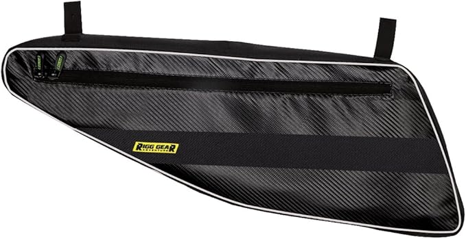
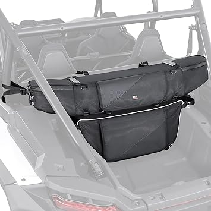

← rzrbags.com
Rzrbags: What We'd Buy With Our Own Money
May 2026
If you've been researching rzrbags lately, you know the market changed a lot in 2026. New options, shifting prices, and plenty of noise to cut through.
What We Learned
- The Q&A section on rzrbags listings often answers questions that no review covers.
- Set price alerts on your top picks. rzrbags prices can drop 30-40% without warning.
- Between two options? Go with the one that has more reviews. Volume of feedback matters for rzrbags.
- Check "Frequently Bought Together" — it shows what extras you might need for your rzrbags.
Must-Have vs Nice-to-Have
- Dimensions matter — Read the actual measurements. "Large" means different things to different rzrbags manufacturers.
- Availability — In-stock with fast shipping beats a "better" product backordered for weeks.
- Material grade — Higher-grade materials in rzrbags last longer and perform better, even when designs look similar.
What We'd Actually Buy
→ DragonFire RZR Bag — Best seller

→ Nelson-Rigg RZR Bag — Best seller
→ #1 — KEMIMOTO Side Door Bags Compatible with RZR UTV Front Door with Knee Pad — Fan favorite

→ Seizmik RZR Cargo Bag — Fan favorite
→ SuperATV RZR Storage — Consistently rated
→ Kemimoto RZR Bag — Fan favorite
Wrapping Up
The best rzrbags is the one that fits your needs and budget. Our detailed comparisons on rzrbags.com make that call easier.
Affiliate Disclosure: As an Amazon Associate, we earn from qualifying purchases. This doesn't affect our recommendations.